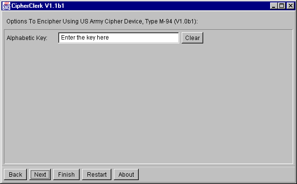

Wheel Ciphers
U.S. Army Cipher Device M-94
This device consists of 25 alphabet discs, on the rim of each there is
a stamped a different, completely disarranged alphabet. These discs are
mounted on a shaft. The order in which the discs are put on the shaft forms
a key for this cipher. The discs are rotated so that the first 25 letters
of the plain text are found in a line. Then one other line is chosen at
random and the letters of this row form the cipher text. The rest of the
message is processed the same way. For deciphering, the position of the
plain text must be located by the cipher clerk: Examing all 25 possibilities,
he should find exactly one containing intelligible text.

CipherClerk's Applet derives the arrangement of the cipher discs from
the given key word: This is repeated until it's length is 25 letters. This
alphabetic key is converted into a numerical key by using the "standard"
procedure. The position where the cipher text is read is obtained from
a random number generator initialized using the date and time of the encryption.
When deciphering, CipherClerk's Applet must determine where to read
the plain text. It assumes that the plain text is english, exactly speaking:
it's letter frequencies are those of an english text. Since this analysis
can only be done on groups of 25 letter, it is far from being perfect.
CipherClerk's Applet would most likely not be able to decipher a final
block of just a few letters. For this reason, it assumes for decrypting
- and assures when encrypting - that such groups will use the offset of
the group before.
I've written another simulation of this
device, offering a look & feel close to the original. Definitely worth
a try!
Major Bazeries Cipher Device
This device is quite similar to the M-94, but it's a bit older. It uses
only 20 disks and a 25 letter alphabet where the letter W is missing.
Again, a simulator with much of the look and feel of the original
device is avaliabel.
To proceed, you may